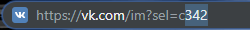
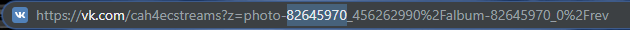
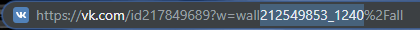
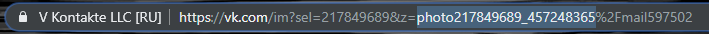

Онлайн спамер для вк
Инструкция по использованию
-
Идентификаторы назначения
-
Личные сообщения 👨
Это может быть как кастомный так и стандартный id вконтакте. Сайт циклично рассылает сообщения по списку пользователей с начала до конца и т.д. по новой.
-
Беседы 👪
Чтобы увидеть id беседы откройте её и в адресной строке вы увидите её порядковый номер относительно всех бесед в которых вы состоите.  -
Беседы с автовыходом ⛔
Этот режим отличается от обычных бесед лишь тем что после отправки сообщения вы сразу же выйдите из неё чтобы вас например не исключили, а затем снова войдете отправите сообщение и выйдите, и т.д. -
Стены юзеров 📄
Для спама на стены нужен строгий числовой id пользователя. Часто пользователи меняют свой идентификатор с стандартного на кастомный, в таком случае чтобы получить их числовой id мы может открыть например любую фотографию пользователя в которой обязательно будет содержаться его числовой id после слова "photo" до "_". -
Стены групп 📢
Как и в предыдущем пункте нужен строгий числовой id сообщества. Для того чтобы его получить можно открыть например фотографию сообщества в которой обязательно будет содержаться числовой id группы после слова "photo" до "_".  -
Коментарии 🖊
Для спама в коментарии вы должны использовать идентификатор записи. Для этого откройте любую запись и скопируйте значение после "wall" до знака "%". Обратите внимание id записей в группах будет всегда начинаться со знака "-", его тоже надо копировать!  -
Обсуждения 🤓
Откройте любое обсуждение и скопируйте значение после "topic-".
-
-
Текст и рандомизация
Заполните текст для рассылки. Это поле может быть пустым если вы указали хотя бы одно вложение в следующем шаге. Поддерживаются переносы строк.
Для рандомизации сообщения или вложения пишите все варианты в двойных квадратных скобках "[[ ]]" через символ "|". Например вот так [[ значение1 | значение2 | значение3 ]]. При отправке текста будет выбрано одно из этих значений. Естественно это можно комбинировать с обычным текстом. Например:
"Привет. Меня зовут [[ Вася | Стёпа | Артем ]]. Я живу в [[ Москве | Екатеринбурге | Санкт-Петербурге ]]"Рандомизация помогает снижать вероятность капчи и бана.
-
Вложения и рандомизация
Если хотите прикрепите любое вложение, например фотографию. Для этого эта фотография должна уже быть залита в ВК. Если она не залита то отправьте её сообщением хоть самому себе и отройте. В адресной строке браузера скопируйте текст начиная с photo (может быть video и т.д.) до знака %. Можете просто кликнуть 2 раза на слове photo и браузер сам правильно выделит то что нужно. 
Важная деталь! Во всех режимах кроме личных сообщений и бесед вложения которые вы прикрепляете должны быть публичными! Это означает что вложения должны быть выложены например на открытой стене, альбоме либо группе. Если вы пытаетесь прикрепить идентификатор вложения из личного сообщения, оно проигнорируется.
Рандомизация вложений работает так же как и текста. используйте двойные квадратные скобки и разделитель "|". Например так:
[[ photo215249685_457248397 || photo215249685_457248406 ]]
Переносы строк ни на что не влияют, можете вводить и в две строки. -
Задержка спама
Выставьте задержку между отправкой сообщений. Обратите внимание при низкой задержке (ниже 10с) вконтакте довольно быстро блокирует спам проверкой на робота.
-
Токены и мультиаккаунтные режимы
Введите свой токен. Для того чтобы получить его перейдите по ссылке KateMobile, нажмите разрешить и в адресной строке открывшегося окна скопируйте следующее:

Если вы хотите спамить с нескольких аккаунтов, то введите все токены в поле и выберите режим мультиаккаунтной рассылки. Поочередный режим отправляет сообщение каждый раз со следующего аккаунта, одновременный со всех сразу, а переключение аккаунта задает интервал через который следующий аккаунт заменит предыдущий.
Токен нужен для того чтобы вконтакте понимал от имени какого аккаунта спамить. Мы используем приложение KateMobile, хотя можно и любое другое которое имеет доступ к отправке сообщений. Мы не используем своё приложение, потому что после 15 февраля 2019 года Вконтакте обновил свою политику касательно Messages API. Подробнее можете почитать на vk developers https://vk.com/dev/messages_api.
Ваш токен остается только у вас! Этот сайт не использует и не может использовать серверные языки и базы данных т.к. лежит на хостинге GitHub.
Технические особенности
-
Задержки таймера ⏰
Наш спамер использует браузерную функцию setInterval() для планирования задержки рассылки. Однако эта функция не гарантирует точную задержку!
Например, таймер в браузере может замедляться по этим причинам:
- Перегружен процессор.
- Вкладка браузера в фоновом режиме.
- Работа ноутбука от аккумулятора.
Все это может увеличивать минимальное временное разрешение таймера (и минимальную задержку) до 300 или даже 1000 мс в зависимости от браузера и настроек производительности ОС.
С другой стороны, небольшие погрешности в задержке могут обмануть капчу Вконтакте будто сообщения и правда отправляет человек.
-
Мобильное использование 📱
Использование спамера на мобильных устройствах возможно, однако при отключенном дисплее (спящий режим) таймер в браузере выключается насовсем примерно через полтора часа использования.
Вторая особенность заключается в том, что даже эти полтора часа спамер будет сильно отставать в целях браузерной оптимизации. Задержка будет примерно в 10 раз выше, чем указано (можно указать задержку разделенную на 10 чтобы минимизировать потери).
С этим ничего не поделать, такие особенности платформы.
-
Локальное хранилище 💾
Наш спамер использует локальное хранилище вашего браузера (localStorage) для хранения данных форм, поэтому при перезагрузке страницы, браузера или даже ОС данные форм сохраняются.
Это очень удобно, например для сохранения ваших токенов, да и других полей, если нужна каждый раз их менять не появляется. Эти данные доступны только вам из хранилища вашего браузера.